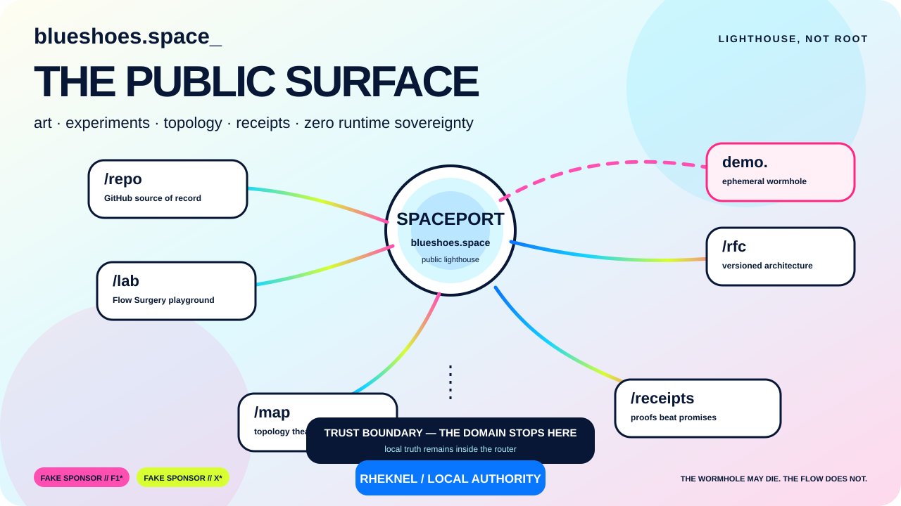

blueshoes.space_
FAKE SPONSOR // F1*FAKE SPONSOR // X*POST-OPENWRTPOST-DPIPOST-QUANTUM
FLOW
SURGERY
One tiny routing brick. A time-varying graph. Conserved Flows. Bounded topology mutations. Rheknel keeps the scalpel away from the arteries.

FLOW = conserved relation, not one sacred path.SURGERY = CUT · BYPASS · SPLICE · BRAID · GRAFT · SEAL · ROLLBACK.SPACEPORT / PRE-LAUNCH
LIGHTHOUSE,
NOT ROOT.
blueshoes.space is the public surface for art, experiments, topology and receipts. It is intentionally outside the router's trust boundary. The domain may disappear; local truth must not.

ONE DOMAIN.
SEVERAL PORTALS.
lab.Flow Surgery playground. Synthetic graph surgery; no live router authority.
map.Topology theatre: synthetic, replayed or explicitly opted-in privacy-preserving observations.
receipts.Proofs over prose: builds, hardware runs, PQ/T negotiation evidence and fault-injection artifacts.
rfc.Architecture drafts and exact-commit references.
repo.Permanent jump back to the GitHub source of record.
demo.Ephemeral wormhole via a physical lab/router tunnel. Allowed to vanish. Never the canonical homepage.
THE WORMHOLE MAY DIE. THE FLOW DOES NOT.
* “F1” and “X” are parody text labels only. No affiliation, sponsorship, endorsement or copied logos. External observation on 2026-09-05: the apex returned Cloudflare error 1033, consistent with a configured Tunnel that has no healthy connector. GitHub Pages/custom-domain and DNS activation remain external configuration steps.